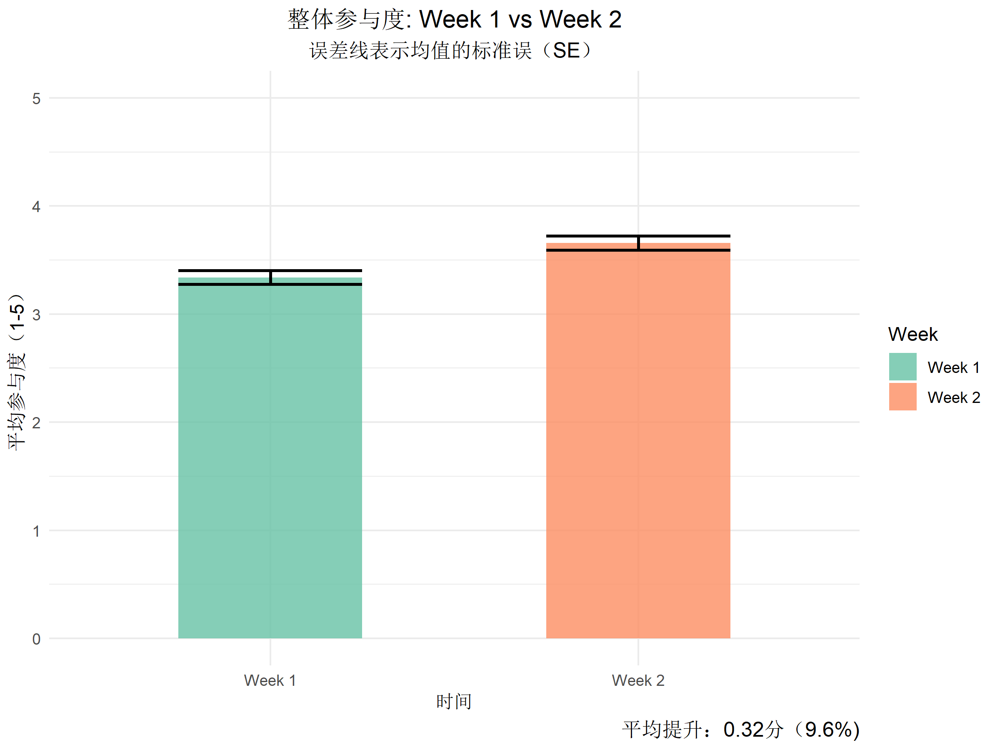
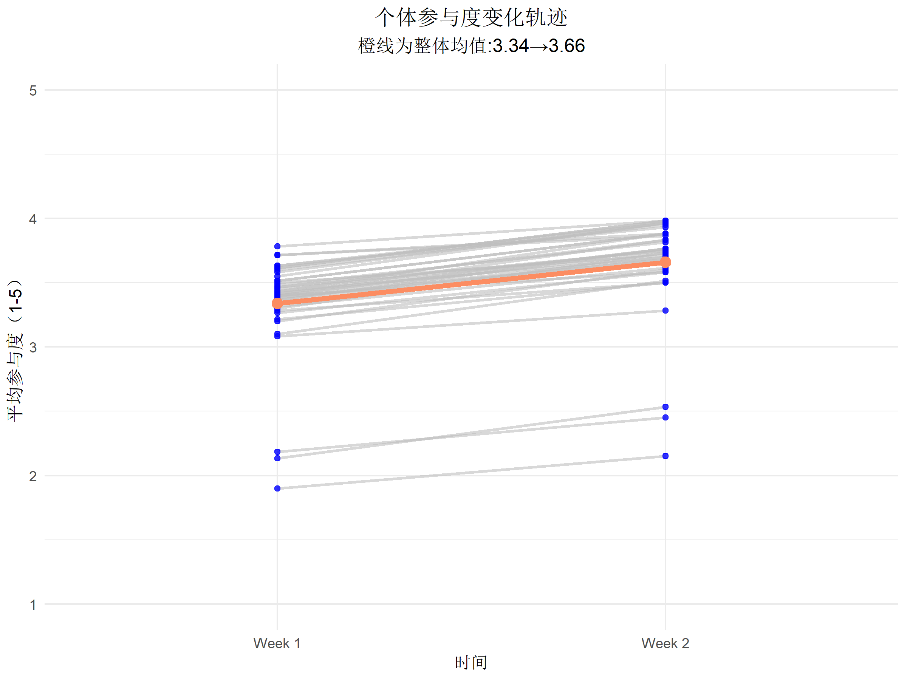
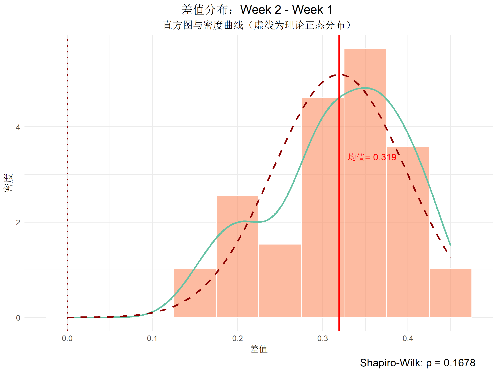
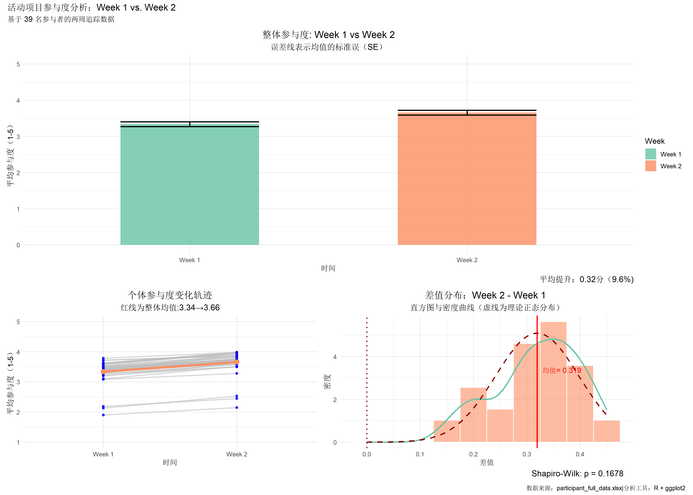

⚠️ 数据说明
本项目基于真实的工作/项目经历进行情境构建，所有数据均为模拟生成，旨在展示从数据清洗、统计建模到可视化洞察的完整定量分析流程。
📊 案例研究：青少年营地活动参与度分析
项目背景
本案例模拟了一项为期两周的青少年营地活动项目。39 名参与者（14-18 岁，不同性别与国籍）在 Week 1 和 Week 2 结束时，分别对 6 项核心活动进行参与度评分（1-5 分制）。
Week 1 结束后，项目组基于参与度反馈对活动执行进行了多项微调（如增加电影之夜投票选项等）。本分析聚焦于 Week 1 与 Week 2 的量化对比，旨在评估参与度的整体变化趋势，不涉及具体调整策略的有效性归因。
分析目标
- • 整体趋势：Week 2 的参与度相较于 Week 1 是否有显著提升？提升幅度如何？
- • 个体一致性：这种提升是集中于少数参与者，还是普遍存在于大多数个体中？
- • 统计可靠性：数据是否满足配对样本 t-test 的前提假设？结论是否经得起检验？
🔬 统计验证与前提检验
在进行深入的可视化分析前，我首先对数据进行了正态性与显著性检验，以确保业务结论具有坚实的统计学支撑。
正态性检验 (Shapiro-Wilk)
为了验证参数检验的前提假设，我对每位参与者的差值分数进行了分布检验。
配对样本 T 检验
对比全体参与者在 Week 1 与 Week 2 的整体均值差异，排除了随机误差的可能。

图表1
整体参与度对比
关键发现：参与者在 Week 2 的整体参与度均值（M = 3.66, SD = 0.41）显著高于 Week 1（M = 3.34, SD = 0.40），平均提升 0.32 分（+9.6%）。
解读：误差线较短，表明参与者评分波动较小，群体层面的提升趋势稳定。该结果确认了整体参与度的正向变化，为后续分析“该变化是否普遍存在于个体层面”提供了量化起点。
个体参与度变化轨迹
关键发现：个体轨迹可视化显示，39 名参与者中绝大多数个体折线呈明显上升趋势（图中橙线代表整体均值），个体提升量的差值标准差 SD = 0.08。
解读：极低的差值标准差说明，参与者的提升幅度高度集中在均值附近，个体间差异极小。该结果与整体层面的显著提升相互印证，表明 Week 2 参与度的正向变化并非由少数极端值驱动，而是在个体层面具有高度一致性。

图表2

图表3
差值正态性验证
关键发现：39 名参与者的差值均值为 0.319 分，差值分布密集落于零基准线右侧，且实际密度曲线与理论正态分布曲线高度重合，Shapiro-Wilk 检验显示 p = 0.1678。
解读：差值数据满足正态分布假设，确保了配对 t 检验的结果具备统计学效度。整体差值均值显著高于零基准线，进一步从群体分布层面直观验证了 Week 2 较 Week 1 参与度的显著正向提升。
分析全景叙事 (Dashboard)
该面板将整体趋势（左上）、个体变化模式（左下）与统计诊断（右下）整合于同一版面，三者相互印证，共同回应了项目初始的研究目标：Week 2 参与度的提升在群体层面显著、个体层面一致，且统计结论可靠，为后续定性研究与体验优化提供了明确的数据依据。

💡 研究启示与后续建议
基于 Week 1 与 Week 2 的参与度对比分析，本研究确认了参与度在群体层面的显著提升及个体层面的高度一致性，为后续用户研究提供了以下方向：
-
1
定性归因研究：当前量化数据虽然能证明参与度提升，但无法解释“为何提升”。因此，建议在 Week 2 结束后对参与度提升幅度处于前 20% 与后 20% 的参与者分别进行半结构化访谈，挖掘驱动参与度变化的具体因素。
-
2
活动类型量化拆解：本分析仅聚焦于整体参与度，并未对各活动类型做详细对比。因此，建议在后续研究中收集各活动的细项评分，识别高贡献度与低贡献度活动，建立“活动类型&参与度”影响矩阵。
-
3
边缘参与者预警机制：个体轨迹图显示，极少数参与者在 Week 1 参与度低于 2.5 分，且在 Week 2 中提升幅度低于均值。建议在未来的迭代项目中，于 Week 1 结束后设立“边缘参与者预警名单”，通过简短的问卷或访谈提前识别风险对象，并及时进行体验感干预。
{"}"}
附录：统计检验与可视化核心代码 (RStudio)
附录：统计检验与可视化核心代码 (RStudio)
环境配置与导入
library(dplyr)
library(tidyr)
library(ggplot2)
library(readxl)
my_colors <- c("#66C2A5","#FC8D62")
df <- read_excel("participant_full_data.xlsx")
df$Week <- factor(df$Week, level = c("Week 1", "Week 2"))00 / 统计检验 (正态性 & 配对 T 检验)
# 转宽表计算差值
week_wide <- df %>%
group_by(Participant_ID, Week) %>%
summarise(Per_Average = mean(Engagement_Score), .groups = "drop") %>%
pivot_wider(names_from = Week, values_from = Per_Average) %>%
mutate(Difference = `Week 2` - `Week 1`)
# 1. 差值正态性检验 (Shapiro-Wilk)
shapiro_result <- shapiro.test(week_wide$Difference)
# 2. 参与度差异配对样本 t-test
t_result <- t.test(week_wide$`Week 2`, week_wide$`Week 1`, paired = TRUE)01 / 整体参与度对比 (图表 1)
👉 查看图表1效果# 数据清洗：计算个体平均值与周汇总数据
individual_data <- df %>%
group_by(Participant_ID, Week) %>%
summarise(Per_Average = mean(Engagement_Score), .groups = "drop")
week_sum <- individual_data %>%
group_by(Week) %>%
summarise(
Average = mean(Per_Average),
SD = sd(Per_Average),
n = n(),
.groups = "drop"
) %>%
mutate(SE = SD / sqrt(n))
# 图表绘制
p_col <- ggplot(week_sum, aes(x = Week, y = Average, fill = Week)) +
geom_col(width = 0.5, alpha = 0.8) +
geom_errorbar(aes(ymin = Average - SE, ymax = Average + SE), width = 0.5, linewidth = 0.8) +
labs(title = "整体参与度: Week 1 vs Week 2",
x = "时间",
y = "平均参与度（1-5）",
subtitle = "误差线表示均值的标准误（SE）",
caption = paste0("平均提升：",
round(week_sum$Average[2]-week_sum$Average[1],2),
"分（",round((week_sum$Average[2]-week_sum$Average[1])/
week_sum$Average[1]*100,1),"%)")) +
scale_fill_manual(values = my_colors) +
theme_minimal() +
theme(plot.title = element_text(size=14,hjust=0.5),
plot.subtitle = element_text(size=12,hjust = 0.5),
plot.caption=element_text(size=12,hjust = 1)) +
ylim(0, 5)02 / 个体参与度变化轨迹 (图表 2)
👉 查看图表2效果# 图表绘制 (基于前置清洗生成的 individual_data)
p_individual <- ggplot(individual_data, aes(x = Week, y = Per_Average,
group = Participant_ID)) +
geom_line(alpha = 0.6, linewidth = 0.8, color = "grey") +
geom_point(alpha = 0.8, size = 1.5, color = "blue") +
stat_summary(aes(group = 1), fun = mean, geom = "line",
color = my_colors[2], linewidth = 1.5) +
stat_summary(aes(group = 1), fun = mean, geom = "point",
color = my_colors[2], size = 3) +
labs(title = "个体参与度变化轨迹",
subtitle = paste0("红线为整体均值:",
round(week_sum$Average[1],2),"→",
round(week_sum$Average[2],2)),
x = "时间", y = "平均参与度（1-5）") +
theme_minimal() +
theme(plot.title = element_text(size=14,hjust=0.5),
plot.subtitle = element_text(size=12,hjust = 0.5)) +
ylim(1, 5)03 / 差值分布直方图与密度线 (图表 3)
👉 查看图表3效果# 图表绘制 (基于前置清洗生成的 week_wide)
p_histogram <- ggplot(week_wide, aes(x = Difference)) +
geom_histogram(aes(y = after_stat(density)), bins = 10, fill = my_colors[2], alpha = 0.6,
color = "white") +
geom_density(color = my_colors[1], linewidth = 1) +
stat_function(fun = dnorm,
args = list(
mean = mean(week_wide$Difference),
sd = sd(week_wide$Difference)
), color = "darkred", linetype = "dashed", linewidth = 1) +
geom_vline(xintercept = 0, linetype = "dotted", color = "darkred", linewidth = 0.8) +
geom_vline(xintercept = mean(week_wide$Difference),
color = "red", linewidth = 0.8) +
annotate("text", x = mean(week_wide$Difference) + 0.01,
y = max(density(week_wide$Difference)$y) * 0.7,
label = paste0("均值= ", round(mean(week_wide$Difference), 3)),
color = "red", hjust = 0, size = 3.8) +
labs(title = "差值分布：Week 2 - Week 1 ",
subtitle = "直方图与密度曲线（虚线为理论正态分布）",
x = "差值", y = "密度",
caption = paste0("Shapiro-Wilk: p = ", round(shapiro_result$p.value, 4))) +
theme_minimal() +
theme(plot.title = element_text(size = 14, hjust = 0.5),
plot.subtitle = element_text(size = 12, hjust = 0.5),
plot.caption = element_text(size = 12, hjust = 0.95))